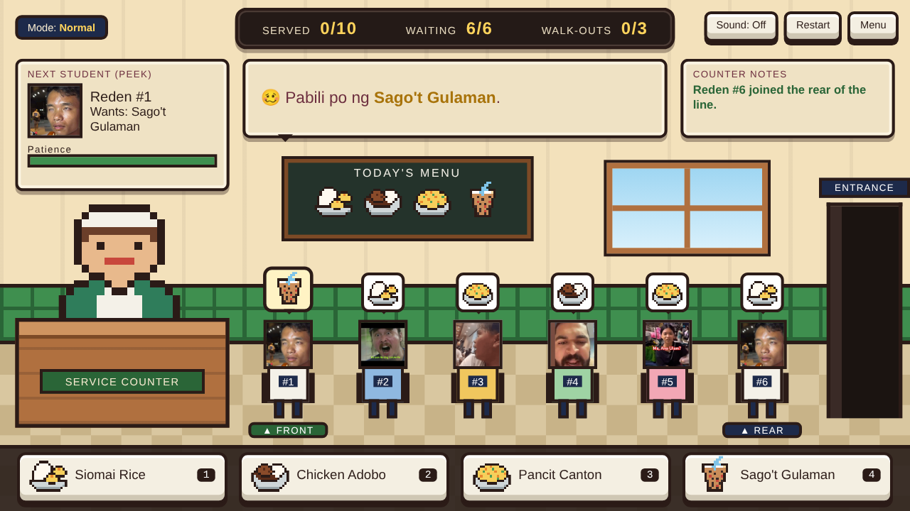
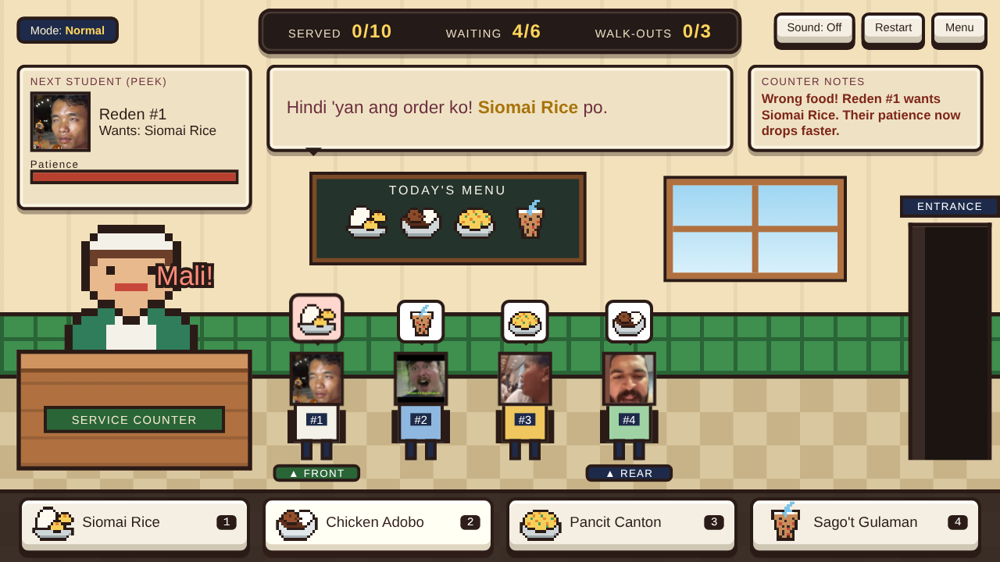
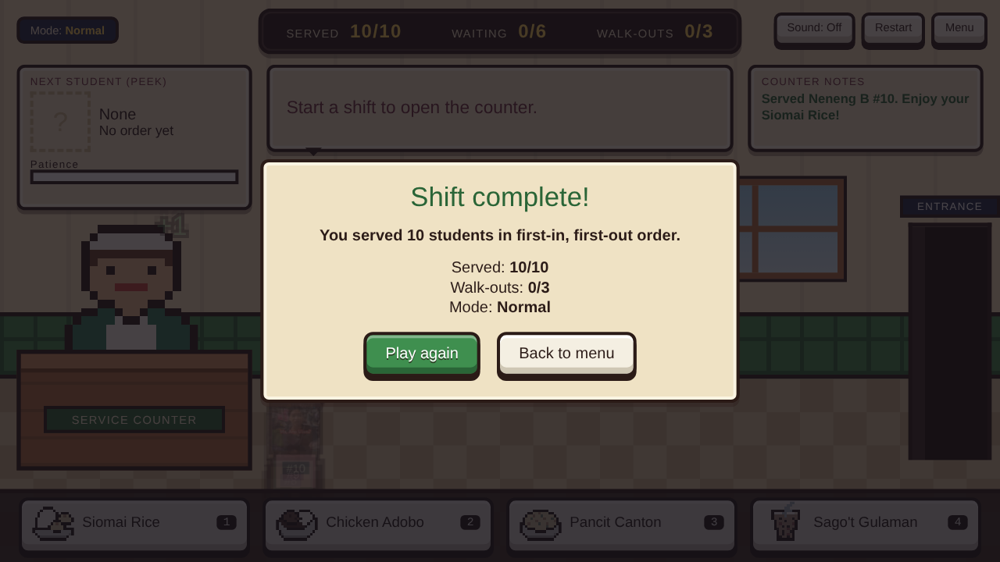

CC104 — Data Structures and Algorithms
Course Term Project · Project 4: Customer Queue Challenge
Team: Jared, Eric, Fred, Russ
Run a canteen counter. Students walk in and line up in arrival order. Serve the student at the front the food they ordered before their patience runs out. Serving 10 students completes the shift. The waiting line is a first-in, first-out queue.
Extract the complete repository, then open index.html. Keep its css, js and assets folders in place. No server or internet is required. Refresh returns to the menu.
| Mode | Student arrives every | Front student's patience | Drain after a wrong food |
|---|---|---|---|
| Easy | 4 s | 14 s | 1.5 times faster |
| Normal | 3 s | 10 s | 2 times faster |
| Hard | 2 s | 7 s | 2.5 times faster |
HTML provides the structure; local Bootstrap supplies the base reset and utility classes; custom CSS draws the canteen scene and animations. JavaScript implements the queue, the rules and the clock. Local jQuery handles clicks, keys and interface updates. GitHub preserves shared source and reviews.
Bootstrap and jQuery are bundled with their licenses. The game makes no HTTP requests during the automated offline checks.
Administrative details to confirm before submission: full names if required, section, group number, and exact deadline.
The queue is an array of objects such as { number: 3, order: "siomai", patience: 10000, annoyed: false }. Index 0 is the front. Student numbers are identifiers, not positions.
| Stored state | Purpose |
|---|---|
| queue | Waiting students, ordered by arrival |
| nextQueueNumber | Next unused student number |
| servedCount | Students served the right food (0–10) |
| angryCount | Students who walked out (0–3) |
| shiftState, lostReason | Menu, playing, won or lost, and why it was lost |
| currentMode, counterBusy | Chosen difficulty; true while a meal is handed over |
| SERVED_TARGET, MAX_ANGRY, MAX_LINE | Constants 10, 3 and 6 |
| Function | Steps |
|---|---|
| enqueueCustomer() | Reject a closed shift or a full line; create a numbered customer with a random order; push at the rear; increment numbering; return the customer. Rejection returns null. |
| dequeueCustomer() | Return null if empty; otherwise shift and return the front. |
| peekCustomer() | Read queue[0], or return null. No mutation. |
| customerArrives() | If the line already holds 6, the shift is lost; otherwise enqueue. |
| serveFood(foodId) | Guard closed, busy and empty states. Peek at the front. Wrong food marks them annoyed. Right food dequeues, adds 1 to served, and wins at 10. |
| drainFrontPatience() | Lower only the front student's patience; report when it reaches zero. |
| frontCustomerWalksOut() | Dequeue the front student without a meal; add 1 to walk-outs; lose at 3. |
| resetGame() | Stop the clock and restore every stored value. |
| renderLine(), updateDisplay() | Traverse the queue front to rear and draw each student in order; update counters, peek panel and buttons. |
| gameTick() | Ten times a second: add an arrival when due, drain front patience, handle a walk-out. |
Every student leaves through dequeueCustomer(), happy or angry, so nobody leaves from the middle of the line. The queue logic and rules contain no page code; the display code only reads the data.
#1, #2, #3 arrive. Peek reports #1 without changing the line. #1 wants Siomai Rice. Tapping Pancit Canton returns "wrong": the queue is still #1, #2, #3 and served is 0. Tapping Siomai Rice dequeues #1 and leaves #2, #3. #4 arrives: the queue is #2, #3, #4, waiting is 3, and served is 1/10.
Array enqueue is typically amortized O(1); peek is O(1); shift-based dequeue is O(n). Drawing the line traverses n waiting students in O(n), with O(n) queue storage, and n is at most 6.
A full line of six students in arrival order, with the front student shown in the peek panel.

A wrong food leaves the queue unchanged and shows a warning.

Ten served: the shift is complete.

Automated browser checks passed using an offline file launch: arrival order, unique numbering, repeated peek, wrong food, FIFO serving, the busy counter, empty-queue handling, front-only patience, walk-outs, both lose conditions, the win at 10, restart and menu reset, the three modes, voice clip hand-over, and the one-screen layout at four window sizes. No HTTP requests or console errors were observed. See test-results.md for the full record and for what has not been verified.
The canteen scene, students' bodies and buttons are drawn with CSS. The four foods and the server are original pixel art stored as letter grids in js/sprites.js. The interface style was inspired by the game Pabili Po! by Auguste; no files from that game are used. Five named user-supplied meme portraits and voice clips (Reden, Baron, Busseng, Insan, Neneng B) give the students their faces and voices, repeating every five arrivals. Only the front student's clip plays through one player; it is cut off when they are served or walk out. A sound button supports quiet play. Names, captions and audio are cosmetic; queue numbers and FIFO behavior do not depend on them.
The first design gave every waiting student a patience timer. That would let a student in the middle of the line leave before the one in front, which is a removal from the middle of a queue and breaks first-in, first-out. The solution was to time only the front student, so every exit, happy or angry, is a dequeue from the front.
Reported contributions to the first version: Jared — HTML and Add integration; Eric — styling and local libraries; Fred — initialization and enqueue; Russ — dequeue. The team planned this redesign and chose its rules. AI assistance wrote the redesigned code, artwork, checks and documentation. Human review of the final code is still required; this report does not claim it occurred.
Use the accompanying demo guide for a 10–15 minute rehearsal. Everyone should explain FIFO, return values, invalid-action guards, and their own part of the code.
The team must review the final code, play it on each member's computer, record and upload its group demonstration, confirm identifying details and deadline, and submit the printed report and MS Teams materials. These actions are not marked complete.